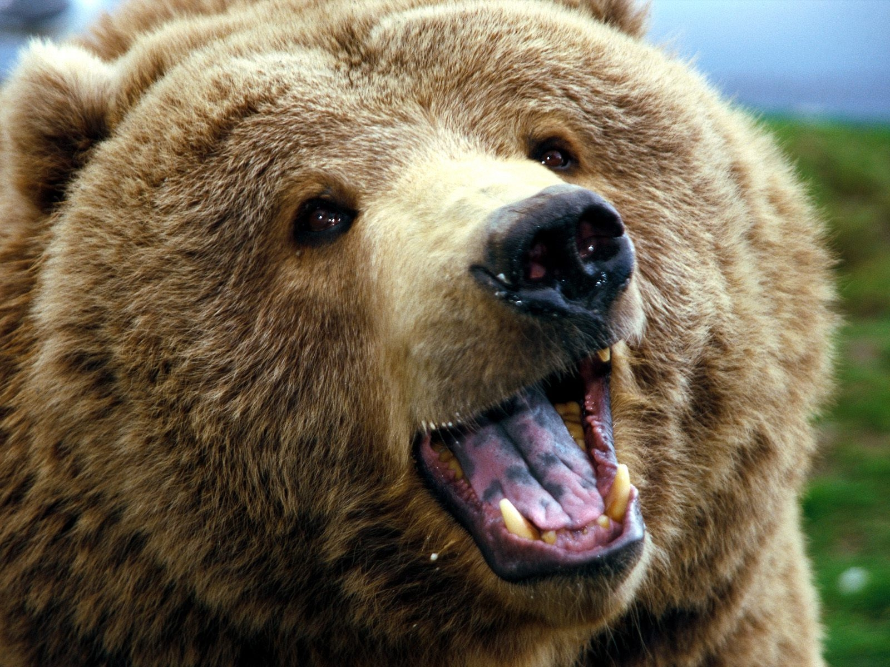
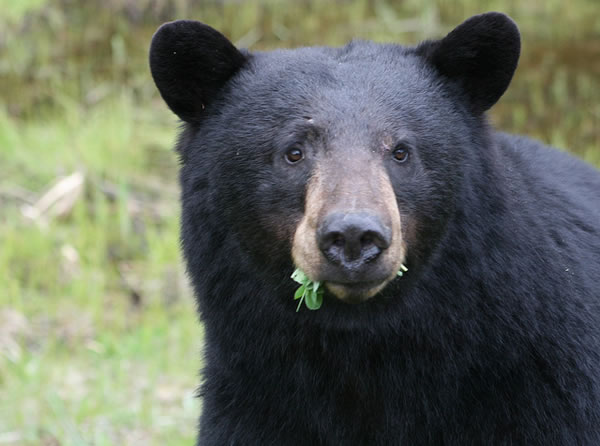

Contenido
Oso Polar
El oso polar u oso blanco es una especie de mamífero carnívoro de la familia de los osos.
Conocer más.
Oso Panda
El panda, oso panda o panda gigante es una especie de mamífero del orden de los carnívoros.
Conocer más.

Oso Pardo
Es una especie de mamífero carnívoro de la familia Ursidae propio de Eurasia y Norteamérica.
Conocer más

Oso Negro
El oso negro americano, es una especie de mamífero carnívoro de la familia de los úrsidos.
Conocer más.